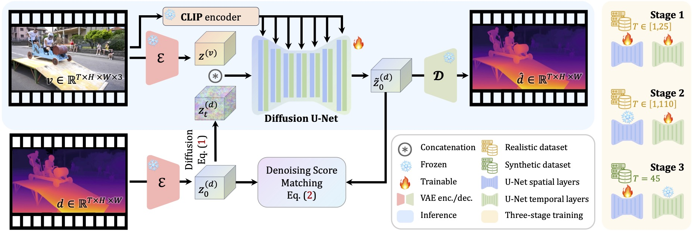

Motivation.
Despite considerable advancements in monocular depth estimation for static images,
estimating depth for open-world videos remains extremely challenging due to the temporal inconsistency,
camera pose estimation difficulties, and diversity in content type and video length.
We present DepthCrafter, an innovative method for estimating temporally consistent depth sequences with intricate details from open-world monocular videos of arbitrary length,
without requiring any supplementary information such as camera poses or optical flow.
DepthCrafter repurposes an image-to-video diffusion model into a video-to-depth model through our meticulously designed three-stage training strategy and compiled paired video-depth datasets.
Our training approach enables the model to capture both precise depth details and rich content diversity
from realistic and synthetic datasets while maintaining a long temporal context for accurately arranging depth distributions throughout the video.
We also propose an inference strategy that processes videos of arbitrary length through segment-wise estimation and seamless stitching.

Overview.
DepthCrafter is a conditional diffusion generation model that models the distribution over the depth sequence conditioned on the input video.
The model is trained on paired video-depth datasets via the denoising score matching.
During inference, given an open-world monocular video, it can generate temporally consistent high-quality depth sequences for the entire video from initialized Gaussian noise,
without requiring any additional information such as camera poses or optical flow.
Inference for videos of arbitrary lengths.
We divide the video into overlapped segments and estimate the depth sequences for each segment with a carefully designed noise initialization strategy to anchor the scale
and shift of depth distributions. We further craft a mortise-and-tenon style latent interpolation strategy to stitch consecutive segments together seamlessly.